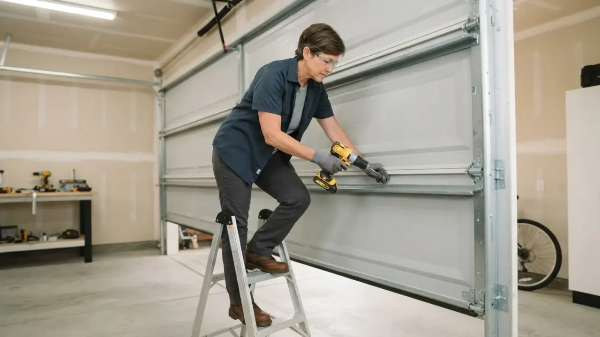

Your local Mango garage door repair team
Garage Door Repair in Mango Done Right the First Time
A stuck garage door in Mango locks the car in or leaves the house open, and neither can wait for next week. We run regular routes through 33550, 33584 and nearby ZIP codes, so most calls get a same-day visit, and emergency calls get priority dispatch day or night. Springs, cables, openers, panels and rollers: we carry the common parts and finish most repairs in one trip. The newer subdivisions here run on heavy double doors and builder-grade hardware, so we size replacement springs to the actual door weight instead of guessing from a chart.
24/7 dispatchMango ZIP codesResidential & commercial
Local system knowledge
Why Mango Homeowners Call Us for Garage Door Repair
The garages in Mango are bigger and newer than the Tampa average, and the doors are heavier for it. A double-wide insulated door puts real load on its springs and opener, and when the original builder-grade hardware gives out, the fix is not a like-for-like swap but a spring and roller set matched to the door's actual weight. We run routes through Seffner-Mango corridor and Thonotosassa Road area regularly, and we carry the parts to do that properly in one visit. Our techs carry torsion spring winding bars, cable drums, winding cones and a sensor alignment tool on every truck, and we stock LiftMaster, Chamberlain, Genie and Craftsman parts, so most repairs finish in one visit. We are a garage door contractor, and every spring replacement meets UL 325 safety standards. Licence number available on request.
Explore Mango services
garage door repairs Tampa FlThe garages in Mango get used hard, every day, and the doors wear in step with that use. School runs, grocery trips, work commutes and visitors all add cycles, and hot humid summers cook lubricant off the tracks. A tune-up that covers lubrication, balance and hardware checks is what keeps a busy door running quiet.
Services available in Mango
Garage Door Repair Services Available in Mango
What follows is not a catalogue, it is the work we do in Mango regularly: springs, openers, cables, panels and rollers, across 33550, 33584 and nearby ZIP codes. Every job starts with a diagnosis on site and a flat price before we start, and most finish the same day.
01
Garage Door Repair
General garage door repair in Mango covers a door that will not close, one that slams down, or one that will not budge at all. We diagnose on site, show you the failed part, and quote a flat price before starting, so the repair is decided in your driveway, not on the phone.
02Garage Door Spring Repair
Springs do the heavy lifting on every cycle, and in Mango they work hard. We fit matched pairs, set the tension with winding bars, and balance the door so it holds halfway on its own instead of drifting down or flying up. Heavy double doors in the newer subdivisions put more load on springs, so we size replacements to the actual door weight.
03Garage Door Opener Repair
When the opener runs but the door does not move, the fault is usually a stripped gear, a worn drive belt or a dead logic board. We test the unit under load, confirm the fault before replacing anything, and repair or replace only the part that failed. The newer subdivisions here run mostly LiftMaster and Chamberlain openers, and we carry their common gear sets and boards on the truck.
04Garage Door Cable Repair
Cables fray slowly and snap suddenly, usually on the side that takes the most wear. We replace both sides together, inspect the drums for grooves and wear, and check the door lifts evenly from both sides before we leave.
05Garage Door Panel Repair
A bent panel can bind the door in its track even when the damage looks small. We check the panel, the hinges and the track together, then either straighten the panel or fit a matching replacement so the door runs smooth and looks right. A mismatched panel can get flagged by the HOA here, so we match the panel profile and factory colour before ordering.
06Garage Door Roller Repair
Noisy rollers are the most common complaint we hear in Mango: steel rollers grind, nylon rollers crack, and both wear flat spots that make the door shudder. We swap the full set, not just the loud one, so the door tracks smooth and quiet again. Builder-grade rollers wear out early under daily cycles here, so we fit a full set rather than replacing one at a time.
Choosing a garage door repair company in Mango
Who is the best garage door repair company in Mango?
The best garage door repair company in Mango is the one that answers the phone, shows up when promised, and fixes the door in one visit. Ask about licensing, insurance, and whether they replace springs in pairs. We are a garage door contractor (licence number available on request) serving the 33550 area and the surrounding Hillsborough County streets.
How do I choose a garage door repair service in Mango?
Choose a garage door repair service in Mango that is insured, with a licence number you can check, and willing to quote the price before starting. Ask if they replace springs in pairs and balance the door afterward. A company that skips those steps will be back for a second repair. Local experience with Mango door types matters too.
More than a service list
How We Execute Garage Door Repair in Mango
Most garages here are attached, insulated and packed with stuff, so the first thing we do is clear a safe work zone and lock the door in place. We check the torsion springs, cables and cable drums before touching the opener, and the patterns below are the ones we see most in the newer subdivisions.
HOA rules require matching door colours and panels
A mismatched panel or a door colour that is off by a shade gets flagged by the HOA and can mean a second repair, and it makes resale harder in a uniform community. How we help: We pull the door brand and colour code off your existing door before ordering anything, and for Clopay, Amarr and Wayne Dalton doors we match the panel profile and factory colour so the repair blends in.
Heavy double doors strain springs and openers
Bigger insulated double doors weigh more, so springs and openers work harder, and a door that cycles several times a day wears out faster than a single-car door used twice a day. How we help: We size replacement springs to the actual door weight instead of guessing, and we set opener force limits to the door, not to the factory default, which is what keeps a heavy door running smoothly.
Large subdivisions hide the right entrance
The subdivisions here are large, with similar street names and more than one entrance, so a dispatcher working from a house number alone can send a truck to the wrong gate. How we help: Give us a street name and a nearby landmark when you call, and we will find the right entrance on the first trip instead of circling the neighbourhood.
Smart openers and keypads lose their settings after a power cut
A power cut can wipe an opener's limits or a keypad's code, and the door then reverses for no reason or ignores the keypad entirely. It looks like a broken opener, but it is usually a settings problem. How we help: We reprogram the opener and the keypad on site, check the safety sensors, and test the door through a full open-and-close cycle before we leave.
Early warning signs
Signs You Need Garage Door Repair in Mango
A small visible symptom can point to a bigger pattern, and catching it early is usually the difference between a roller swap and an opener replacement.
Door shudders or grinds going up
Shuddering and grinding usually mean worn rollers, a bent track or dry hinges, and the friction wears the springs and opener gears while it goes on. Cleaning the track and fitting a full set of rollers is the usual fix, and it is cheaper than the opener repair that follows if it is left.
Door hangs crooked in the opening
A door that sits uneven, with one side higher than the other, usually has a frayed or snapped cable or a worn cable drum. The opener strains against the imbalance, so the door should not be run again until the cables are replaced as a pair and the door is re-levelled.
Remote works sometimes, or not at all
A remote that works from the driveway one day and not the next is usually a weak battery, a failing receiver or a sensor problem, not a dead opener. Try a fresh battery first, and if the door still ignores the remote, we test the receiver and the safety sensors on site.
Door slams down instead of closing smoothly
A door that drops fast on the way down has lost spring tension or cable support, and it is dangerous to stand under. Do not try to catch it or force it back up. Secure the area and call us, because a slamming door is a spring or cable failure that needs fixing before the door is used again.
Emergencies and availability in Mango
Is there 24/7 garage door repair in Mango?
Yes. We answer the emergency line around the clock for 24/7 garage door repair in Mango. Night calls are usually a door stuck open, a car trapped inside, or a snapped cable. We secure the door first, then repair it. Call and our dispatch team picks up.
Do you offer emergency garage door repair in Mango?
Yes, we offer emergency garage door repair in Mango for doors that are stuck open, off track, or have a snapped cable. We treat a door off track as a safety emergency because it can fall. Call any time, and we will roll a truck and secure the door before repairing the cause.
Clear starting points
Garage Door Repair Pricing in Mango
Most repairs in Mango run $185 to $385 for a single failure like a spring, cable or roller set, and a full hardware rebuild with both springs and cables lands around $450 to $650. A basic tune-up is $95 to $165. Opener repairs range from $180 to $450, and a full opener replacement runs $350 to $850 installed. Panel replacement depends on the door model and whether a matching section is still available. We quote the price before we start, and the quote does not change unless we find something we could not see until the door came apart.
Door Weight and Size
We weigh the door on the visit before we quote a number. The weighing matters here because newer subdivisions mix with older homes; a single door and a double door take different springs and different time, and we price the door in front of us, not an average one.
Number of Springs
The spring count is the second thing we check, right after the weight. On a Mango visit, whether the door is in 33550 or over by Interstate 4, a single spring and a pair of springs are different jobs, and the quote says which one your door needs.
Condition of the Rest of the Hardware
The hardware around the springs matters as much as the springs. In Mango we check the cables, track, rollers and opener on the visit, and a door near Mango Recreation Center with a frayed cable or a bent track costs more to put right than one in 33584 whose hardware is still sound.
Garage door repair costs in Mango
How much does garage door repair cost in Mango?
Most repairs in Mango run $185 to $385 for a single failure like a spring, cable or roller set, and a full hardware rebuild with both springs and cables lands around $450 to $650. A basic tune-up is $95 to $165. A simple roller or sensor fix is at the low end. Opener repairs run $180 to $450, and a full opener replacement is $350 to $850 installed. We quote before we start.
We know the route
Navigating Mango: Landmarks We Use
Knowing the route matters when the schedule is tight. The landmarks below are the ones we use to orient a truck in Mango, so mention the nearest when you call.
Mango Recreation Center
The recreation center sits at the heart of the community. If you live near it, say so: it places you at once and tells the dispatcher you are on the central side of Mango.
Dr. Martin Luther King Jr. Boulevard
The boulevard, State Road 574, runs east to west through the centre of Mango. Tell us which side of it you are on, and the truck can be routed to approach from the right side.
Interstate 4
I-4 forms the northern boundary of Mango. If you live near the interstate, mention the exit you use: it helps us group your call with the other jobs in your area.
Mango service coverage
Is your ZIP on the route?
These are our most frequently served ZIP codes in Mango: 33550, 33584 and nearby ZIP codes. Nearby areas may also qualify, so call if you do not see yours.
3355033584
Popular neighborhoods: Mango proper near Mango Recreation Center · Seffner-Mango corridor · Thonotosassa Road area · Brandon-adjacent Mango streets
Check my address →
1234
Primary Mango response zoneSame-day response depends on current call volume, technician availability, and required equipment.
Reviews from Mango customers
What Mango Customers Say
★★★★★
“Our spring snapped on a Friday evening and the car was stuck in the garage. They answered the phone, gave me a real window, and showed up when they said. The tech replaced both springs, showed me the old ones, and had the door running in about an hour and a half. Fair price and no upsell.”
★★★★★
“I called about a garage door opener that would not lift the door. Turned out the gear was stripped and one spring was shot. They fixed both in one visit and reprogrammed my remotes and keypad. I have used two other companies in the area and this was the first one that explained what failed and why.”
★★★★★
“Our detached garage door was off track and would not close. They came out the same day, got it back on the track, and replaced a bent section. The tech also cleared sand out of the tracks and lubricated everything. Door has been quiet and straight for months now. Would call them again.”
Outside Mango?
Nearby Cities We Cover from Mango
Distances are straight-line distances, not road distances.

Downtown Tampa
About 9 miles west of Mango. We serve it from the same trucks, so mention it when you call and we will fit it into the route.
Channelside
About 9 miles west of Mango. We serve it from the same trucks, so mention it when you call and we will fit it into the route.
Hyde Park
About 11 miles west of Mango. We cover it on the same routes, so a call from there can usually be paired with a Mango job on the same day.Mango garage door repair local notes
Local Notes for Mango
Mango sits east of Tampa in Hillsborough County, in a fast-growing part of the county where newer subdivisions mix with older homes.
HOA rules shape exterior work here, so check before changing the door's outward appearance. We match the panel profile and factory colour before ordering, and we pull the brand and colour code off your existing door, so a repair blends in and does not come back as a second job.
Heavy double doors need springs sized to their actual weight and opener force limits set to the door, not to the factory default. That combination is what keeps a heavy door running smoothly for years, and it is what we check on every spring and opener call in these subdivisions.
Navigation is part of the job in a large subdivision. Give the dispatcher a street name and a nearby landmark, and mention the gate or entrance if there is one, and the truck will find the right approach on the first trip instead of circling the neighbourhood.
Care and maintenance in Mango
Why do garage door springs fail sooner in Mango's newer subdivisions?
Builder-grade springs are usually the lightest option that met the budget, and a double door in a busy family home cycles four or five times a day. That combination wears springs out sooner than most owners expect. We replace springs as a pair and size them to the door's actual weight, which we measure on the visit, so the new springs last their full life.
How do I know if my garage door springs are worn out?
Lift the door by hand halfway and let go. A balanced door stays where you leave it; a door with tired springs drifts down or feels heavy to lift. Other signs are a door that opens unevenly, with one side higher than the other, or a loud bang when a spring lets go. If you notice any of these, call before the door fails completely.
Mango garage door repair cdp
A Crossroads Community Between Tampa, Seffner and Brandon
Mango is a census-designated place east of Tampa, a community that grew up at the crossroads of the roads that link Tampa to Seffner, Brandon and Plant City. It is not a suburb in the usual sense: it is a mix of older homes, newer subdivisions and the small businesses that serve them, all spread along Dr. Martin Luther King Jr. Boulevard.
The main road through Mango is Dr. Martin Luther King Jr. Boulevard, known as State Road 574, and it runs east to west through the centre of the community. Interstate 4 forms the northern boundary and Interstate 75 forms the western boundary, so Mango sits inside a triangle of interstates, and the traffic for the whole east side of the county passes through it. The homes are a mix: older houses on generous lots along the main road, newer subdivisions set back from it, and the streets around Mango Lake and Mango Elementary School that have been there for generations. The garages reflect that mix, from single garages on the older homes to double garages on the newer streets.
The older homes in Mango often have single garages with doors that have been replaced once or twice already. The openings are often a non-standard size, the headers are low, and the hardware has been patched over the years by different hands. A door in one of these garages needs measuring before anything is ordered, because a standard door will not fit and a part ordered by guesswork comes back wrong. We measure the opening, the headroom and the side room on the first visit, and we keep parts for older doors on the truck so a repair can often be finished the same day.
The newer subdivisions tell a different story. They have the double garages and the builder-grade doors that are familiar across the county, and their pattern of wear is the familiar one: builder-grade springs and plastic rollers that wear out sooner than the owner expects on a door that cycles four or five times a day. The community rules shape exterior work here too, and the garage door is part of that. Most associations specify the panel style and colour so the street keeps a consistent look, and a door that does not match can be rejected after it is fitted. We pull the brand and colour code off your existing door and match the panel profile before ordering, so the replacement blends in and does not come back as a second job.
Mango's position between the interstates is a practical advantage for a repair visit. Our trucks reach the area from I-4 or I-75, and the dispatcher groups calls by area so the truck works one neighbourhood at a time. Tell us your street and your nearest cross street when you book, and if you are near Mango Lake or the recreation centre, say so: it places you faster than a house number alone, and it tells the dispatcher whether the truck should come in from the interstate or from the surface streets.
Mango garage door repair access
Dr. Martin Luther King Jr. Boulevard and the Interstates Around Mango
Mango is defined by its roads. Dr. Martin Luther King Jr. Boulevard runs through the centre, Interstate 4 forms the northern edge, and Interstate 75 forms the western edge. Our trucks use all three, and the time of day decides which one is faster.
Dr. Martin Luther King Jr. Boulevard, State Road 574, is the main street of Mango, lined with homes, small businesses and the schools that serve the community. It carries the local traffic, and it is busy at the times you would expect: morning traffic heading west toward Tampa, and late afternoon traffic heading east again. A truck that needs to cross the boulevard to reach a street on the other side can wait a long time for a gap, so we plan the route to approach from the right side wherever possible. If you are booking, a mid-morning or early afternoon slot is usually the quickest, and telling us which side of the boulevard you are on helps the dispatcher route the truck so it does not have to cross the traffic twice.
Interstate 4 runs along the northern boundary of Mango, and it is the road we use to reach the area from downtown Tampa and from the east. The exits that matter most are the ones for US-301 and for the roads that serve the neighbourhood, and the dispatcher groups calls by exit so the truck works one area at a time. If you live near I-4, mention the exit you use: it places you on the map faster than a street address alone. Interstate 75 runs along the western boundary, and it is how we reach Mango from the north and the south. The two interstates together mean a truck can reach most of Mango quickly, whichever direction it is coming from.
US-301 runs north to south to the west of Mango, and it is the other main road for this area. It carries the traffic between the neighbourhood and the suburbs to the north and south, and it is busy at rush hour in both directions. Our dispatcher uses it when planning a route, and knowing which road is nearer to you helps the truck arrive from the right side. If your street is reached more easily from US-301 than from the boulevard, mention it: the difference is a few minutes on a quiet day and much more when the boulevard is busy.
The streets themselves need care. Many are narrow, some are effectively one-way even if the signs do not say so, and the older streets have low-hanging trees that drop limbs after a storm. A long truck cannot always turn around at the end of a dead-end street, so we often reverse in or plan the approach so the truck leaves facing out. If your garage is reached by a side drive, say so when you book: a note about where to park, given when you book, is worth more than a phone call from the kerb.
Your home and access in Mango
Do I need to check with my homeowners association before replacing a garage door in Mango?
Yes, it is worth checking first. Most associations specify the panel style and colour so the street keeps a consistent look. We match the panel profile and colour code off your existing door before ordering, and we can provide a specification sheet for the association if it is needed.
My garage door in Mango is on an older home with a non-standard opening. Can you fit a door to it?
Yes. Many older Mango homes have non-standard openings and low headers, so we measure the opening, the headroom and the side room before ordering anything. A standard door will not fit, and a part ordered by guesswork comes back wrong, so measuring first is the rule here.
Mango garage door repair double doors
Heavy Double Doors and the Springs That Carry Them in Mango
The double garage door is the defining feature of a newer Mango home, and it is also the part that fails most often. A sixteen-foot door is heavy, it cycles often, and the springs that lift it work harder than the springs on any single door. Understanding that is the key to keeping a Mango door working.
A double door weighs roughly twice as much as a single, and its springs carry all of that weight every time the door moves. The springs fitted by the builder are usually the lightest option that met the budget, and on a door that cycles four or five times a day they lose tension sooner than the owner expects. The first sign is a door that feels heavy when you lift it by hand, or that drifts down a few inches after you let go halfway up. The second sign is a door that opens unevenly, with one side higher than the other, which means one spring is weaker than the other. Both signs mean the springs should be replaced as a pair, and soon, because a tired spring strains the opener and the cables, and a spring that lets go can drop a heavy door without warning.
Sizing the springs correctly is the whole job. A spring that is too light will fail early and make the door heavy; a spring that is too heavy will pull the door up too fast and wear the opener out. We weigh the door on the visit and size the springs to its actual weight, not to its size, because two doors of the same size can weigh very different amounts depending on whether they are insulated, what gauge the steel is, and whether they have windows. That measurement is the difference between a spring that lasts its full life and one that fails again within a year, and it is the reason we never guess a spring size from a phone description.
The opener matters just as much on a double door. A light-duty opener fitted to a heavy double door will strain every time it runs, and the gears wear out sooner than they should. When we replace springs on a double door we check the opener as well, and we set the force limits to the door rather than leaving them at the factory default. A modern belt-drive opener with a battery backup is a genuine improvement on a heavy door: it runs quieter, it handles the weight better, and it keeps working through a power cut. If the old opener is already struggling, replacing it at the same time as the springs is usually better value than paying for two separate visits.
Heavy double doors need springs sized to their actual weight and opener force limits set to the door, not to the factory default. That combination is what keeps a heavy door working smoothly for years, and it is the part of the job that is invisible from the street but makes all the difference in how the door runs. The rollers and the track carry the same load, and they wear in the same pattern. We fit sealed nylon rollers as standard, which run quieter and last far longer than the plastic rollers the builder fitted, and we check the track for bends and for bolts that have worked loose, because a track that has shifted will wear a new set of rollers out just as fast.
Mango garage door repair hoa
Community Rules and Matching Doors in Mango's Subdivisions
Most of Mango's newer subdivisions have a homeowners association, and the association has a say in what the outside of your home looks like. That includes the garage door, and it is worth knowing the rules before you order a replacement.
The usual rule is simple: the door must match the style and colour of the doors already on the street. That means the panel profile, the colour and sometimes the window pattern are all specified, and a door that does not match can be rejected after it is fitted, which is an expensive mistake. Before you choose a replacement, check what your association requires. We pull the brand and colour code off your existing door and match the panel profile before ordering, so the replacement blends in and does not come back as a second job. If the association needs a sample or a specification sheet, we can provide one before the order is placed.
Matching a door is not just about the colour. The panel profile matters just as much: a long-panel door looks different from a short-panel door, and a carriage-house style door looks different from both. If the original door is no longer made, we match it as closely as the current range allows, and we will show you the options before ordering so you can approve the look. The same care applies to a repair: a replacement panel should match the rest of the door, and we pull the colour code off the existing door before ordering so the new panel does not stand out.
The older homes in Mango are a different case. They usually have no association, and the owner is free to choose the door they like. Even so, matching the door to the house is worth doing: a door that suits the home looks better and is easier to sell. We match the panel profile and the colour to the house before ordering, and we will show you the options before anything is ordered so you can approve the look. The same care applies to the hardware: a new door hung on old, corroded track is a new door with an old problem, so a replacement usually means new track, new rollers, new cables and new springs as a set.
There is also the practical side of working in a subdivision with rules. Some associations limit the hours when work can be done, and some require notice before a truck is parked on the street. Tell us about any restrictions when you book, and we will plan the visit around them. We work within the association's hours, keep the work area clear, and take the old door away with us, so there is nothing left on the driveway for a neighbour to notice. A replacement done properly should be invisible the next day, except that the door works better than it did before.
Mango dispatch is ready
Need garage door repair Tampa? Call now
A door that will not close is a security risk, and a snapped spring only gets worse. We answer 24/7, quote before we start, and carry the parts to finish most jobs the same day. Call and we will get a truck moving.
Talk with the local team
Request Mango service
Call, text or email and a real person answers, day or night. Tell us what the door is doing and we will give you a price range on the spot plus the soonest arrival window. Most calls placed before mid-afternoon get a same-day visit anywhere in Hillsborough County.